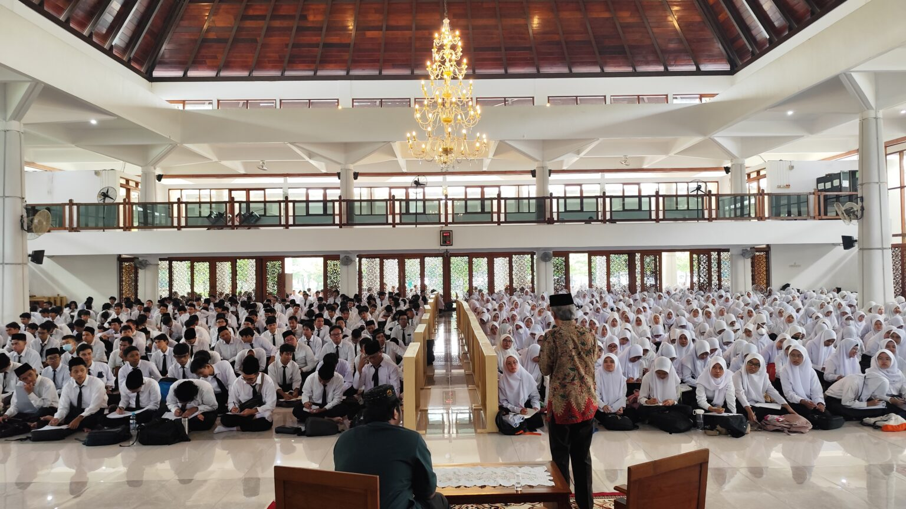
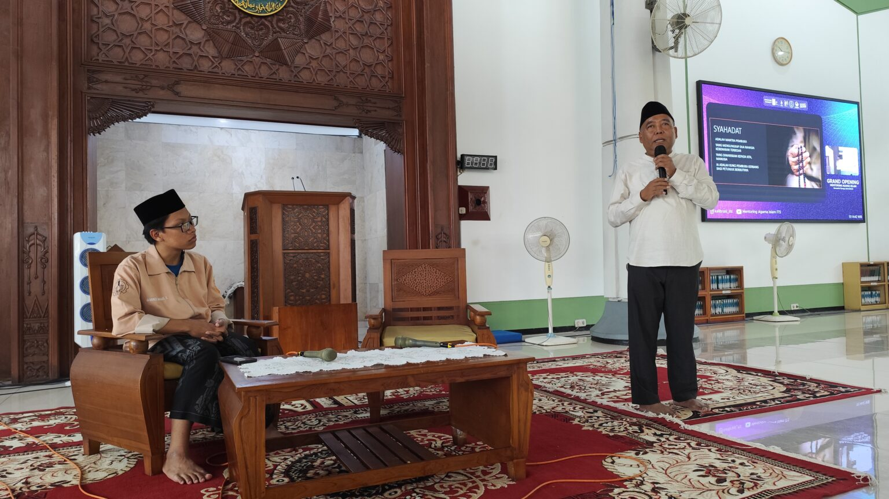
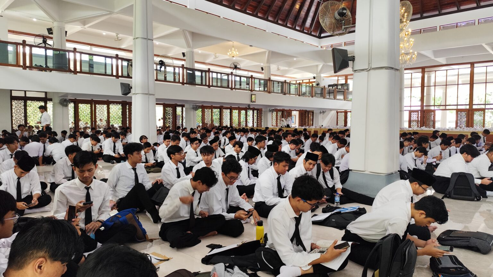

25 Februari 2025, 16:02
Bantu Adaptasi Mahasiswa Baru, ITS Gelar Mentoring Agama Islam
Suasana Kuliah Umum Mentoring Agama Islam Semester Genap 2024/2025
Kampus ITS, ITS News – Institut Teknologi Sepuluh Nopember (ITS) Kegiatan ini bertujuan membentuk karakter mahasiswa baru (maba) muslim berbasis nilai-nilai Islam. Acara yang resmi dibuka dalam kuliah umum ini berlangsung di Masjid Manarul Ilmi ITS, Sabtu (22/02).
Dalam pembukaan acara, Ketua Tim Pembina Kerohanian Islam (TPKI) ITS Prof Dr Muhammad Mashuri MT menyampaikan bahwa mentoring merupakan sarana pencarian ilmu bagi mahasiswa. "Kegiatan mentoring ini untuk membentuk karakter mahasiswa agar memiliki pemahaman berbasis nilai-nilai Islam dalam menghadapi era 5.0 yang penuh dengan tantangan," ujarnya.
Lebih lanjut, dosen yang akrab disapa Mashuri ini menjelaskan, kegiatan mentoring ini terdiri dari beberapa rangkaian acara yang dirancang untuk mendukung mahasiswa memahami ajaran Islam dalam konteks akademik. Setelah mendapat pemahaman awal, mahasiswa akan melakukan sesi kelompok dan ujian untuk menguji pemahaman mereka.
Dosen agama islam ITS Prof Dr Ir Adi Soeprijanto MT saat memberikan materi sirah nabawi pada Kuliah Umum Mentoring Agama Islam Semester Genap 2024/2025
Tak berhenti di situ, kegiatan ini kemudian diperkuat melalui kegiatan Ramadhan di Kampus (RDK) 46. Pada kegiatan ini, maba mengikuti kajian inspiratif, kajian rutin Subuh, dan Tarawih selama bulan Ramadhan guna memperdalam pemahaman keislaman secara aplikatif. “Melalui mentoring ini, mahasiswa mampu mengamalkannya ilmu keislaman dalam kehidupan sehari-hari,” tambah Dosen Statistika ITS tersebut.
Selaras dengan Mashuri, Ketua Pelaksana Mentoring Agama Islam Semester Genap 2024/2025 Fathan Hidayatulloh menjelaskan bahwa format mentoring terus berkembang. Perubahan kurikulum menyebabkan mata kuliah Agama Islam dialihkan ke semester atas. Maka, peran mentoring bagi maba menjadi garda utama dalam memberikan arahan agar siap menghadapi perkuliahan.
Fathan menyoroti bahwa kurikulum mentoring kini lebih berfokus pada tiga materi utama yaitu Tauhid, Ibadah, dan Akhlak. Disertai dengan pendekatan yang lebih relevan terhadap kehidupan mahasiswa, ketiga materi tersebut juga berisi isu akademik, hubungan mahasiswa dengan dosen, hingga tantangan sosial di era digital. “Materi tersebut didukung dengan pemberian penugasan kepada peserta guna mencapai tujuan kegiatan,” ungkapnya.
Maba ITS dalam kegiatan Mentoring Agama Islam Semester Genap 2024/2025 di Masjid Manarul Ilmi ITS
Menilik terlaksananya mentoring, ia berharap program ini bisa terus berkembang dan lebih terstruktur ke depannya. Mentoring ini bukan sekadar formalitas, tetapi wadah untuk memperbaiki diri dan menjadi pribadi muslim yang lebih baik. Mahasiwa yang tidak hanya cerdas secara intelektual, tetapi juga memiliki pondasi moral dan spiritual yang kuat.
Dengan adanya program mentoring ini, ITS berharap dapat mencetak generasi muda tidak hanya unggul secara akademik tetapi juga memiliki karakter yang kuat dan berlandaskan nilai-nilai Islam. “Pastinya untuk dapat menghadapi tantangan yang lebih besar di masa depan,” tutup Fathan optimis.
Reporter: Lathifah Sahda
Redaktur: Rayinda Santriana